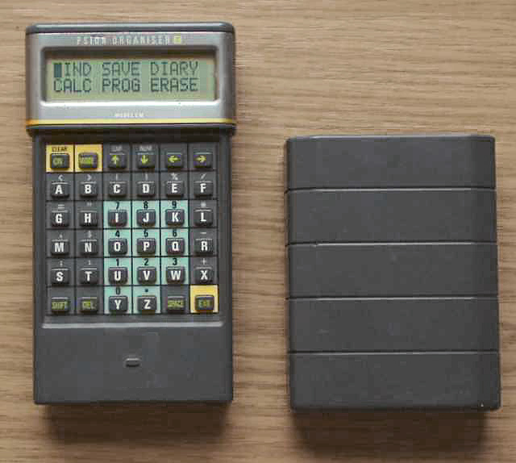
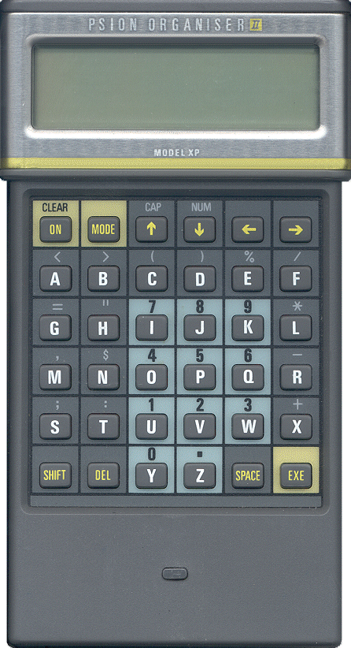

Psion Organiser II
Pocket computer with full QWERTY and expansion slots.

Overview
The Psion Organiser II, launched in 1986, is a landmark pocket computer widely regarded as the first practical personal digital assistant (PDA). Encased in a rugged hard‑plastic body with a distinctive sliding cover, it features a 6×6 alphabetical keypad and a two‑line, 16‑character liquid‑crystal display. The device combined an electronic diary, a searchable address database, an alarm clock, and a scientific calculator, directly competing with the paper‑based Filofax.
At its core is an 8‑bit HD6303Y microprocessor running at 0.92 MHz, typically with 8 KB of RAM (later models offered up to 32 KB). The interchangeable top slot accepted Datapaks – solid‑state program cartridges – while the two side slots accommodated Rampaks for additional memory, a forerunner of removable storage cards. A built‑in programming language, POPL (Psion Organiser Programming Language), allowed users to write custom database applications; machine‑code execution was also supported.
By integrating a mobile database, calculator, and time‑management tools in a pocket‑size format, the Organiser II defined a new interaction paradigm for portable computing. Its expandability through Datapaks and the ability to run user‑created software anticipated features that would later become standard in PDAs and smartphones.
Deep dive
Psion was founded in 1980 by David Potter with the goal of creating handheld computers for practical personal use. The Organiser I appeared in 1984 as a simple diary and calculator, but it was the Organiser II, released two years later, that refined the concept into a full‑featured pocket information manager. Potter’s ambition was to replace traditional paper organisers with a device that could not only store data but also run custom programs, a vision that drove the design of the Organiser II’s expansion system and programming environment.
The Organiser II is built around a Hitachi HD6303Y processor clocked at 0.92 MHz. Base models carry 8 KB of RAM, while later variants (e.g., the LZ model) provided 32 KB. The monochrome LCD shows two lines of 16 characters. The 6×6 keypad places letters alphabetically, with dedicated keys for frequently used functions. Power comes from a standard 9 V battery or an external supply. A hallmark of the design is the hard‑plastic sliding cover that protects the keypad and display when not in use. The top expansion slot exposes an 8‑bit parallel bus, accepting ROM‑based Datapaks (program cartridges) and later FlashPaks; two side slots allow connection of Rampaks for additional memory, a feature that has been expanded by the community to 256 KB and even 512 KB today. The slot interface also enabled peripheral devices such as a Comms Link for RS‑232 communication.
Interaction with the Organiser II is menu‑driven. Upon power‑on, the main menu offers access to the diary, phone book (address database), clock/alarm, calculator, and the programming language POPL. The diary and phone‑book entries are fully searchable by text string, a novel feature for a pocket device at the time. The calculator provides scientific functions and can be used interactively, while the alarm clock can be set with any diary entry. Programs written in POPL appear as menu items and can manipulate the built‑in databases or create new ones. All input is textual via the 6×6 keypad, and output is limited to the 16‑character lines, requiring a concise, task‑focused interaction style. The sliding cover doubles as a physical power switch – opening the cover activates the device – reinforcing a direct, tactile interaction metaphor.
The Organiser II enjoyed modest commercial success in the late 1980s, particularly among business professionals and field workers. Its ascendancy was overshadowed by the launch of the Psion Series 3 in 1991, a clamshell PDA with a larger screen and a more sophisticated operating system. Psion gradually withdrew from the consumer handheld market, re‑focusing on the development of the Symbian OS and later industrial data‑collection equipment. The Organiser II line was discontinued, but it has acquired a cult following. A dedicated hobbyist community continues to develop hardware add‑ons – including a JavaScript emulator, USB CommsLinks, Rampaks up to 256 KB, and 512 KB FlashPaks – keeping the platform alive as of autumn 2024.
The Psion Organiser II is recognised as a pioneering PDA. It demonstrated that a pocket‑sized device could serve as a credible mobile database, diary, and calculator, establishing interaction patterns that were later refined by the Psion Series 3 and 5, and by devices such as the Palm Pilot. The Datapak/Rampak expansion model prefigured today’s removable memory cards, while the user‑programmable POPL language anticipated the app‑store model of later mobile platforms. By proving that a handheld computer could replace a paper organiser and run purpose‑built applications, the Organiser II secured a place in the history of portable computing.
Team & pioneers
- Psion PLC. British electronics company; developer and manufacturer of the Organiser II
- David Potter. Founder of Psion, who drove the vision for pocket‑sized information management
Media

